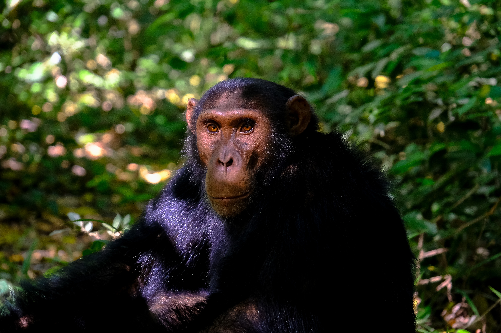

Who are we?
We, CIRMAD, are a not-for-profit and apolitical organization interested and involved in natural resource management and development
Our Vision
To become a reference body in the global partnership for biodiversity conservation and development by 2020.
The CIRMAD Creed
Homo sapiens, we the human beings, like all living things on earth depend on the natural environment and the rest of the biodiversity for livelihood. The increase in the world population and the resultant increase in our needs for the natural resources, for subsistence, but much for income, has led to some species being exploited to extinction while some resources have been totally emptied in certain parts of the world.
In the crave for better living, sometimes ostentatious living, especially in terms of urban and technological development, the natural environment and the resource base has had to suffer, through degradation and depletion.
It becomes incumbent on human kind, the greatest natural resource user, to rise up for a lasting resource base, by practicing sustainable use/management of their indigenous natural resources.
Our Work
Some of our projects include...

Chimpanzee Conservation
 Reforestation
Reforestation
Mubako Language Development